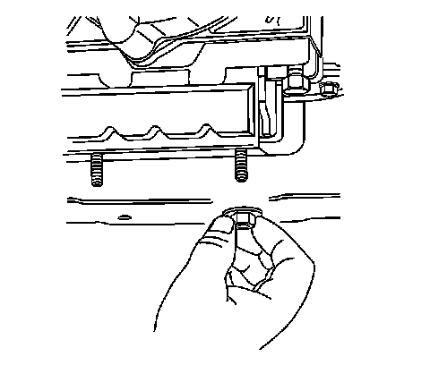

Transfer Case Assembly Replacement
Transfer Case Assembly Replacement
Removal Procedure
1. Raise and suitably support the vehicle. Refer to Lifting and Jacking the Vehicle.
2. Remove the transfer case shield, if equipped.
3. Remove the rear propeller shaft.
4. Remove the front propeller shaft.
5. Drain the fluid from the transfer case.
6. Support the transmission with a suitable jack stand.

7. Remove the transmission mount nuts and bolts.

8. Remove the crossmember bolts.
9. Remove the crossmember.
10. Remove the transmission mount.
11. Install a suitable transmission jack to the transfer case.
12. Remove the transfer case adapter nuts.
13. Remove the fuel pipe bracket from the studs.
Important: Pull straight back on the transfer case in order to position the transfer case so that it can be rotated parallel to the transmission.
14. Remove the transfer case from the adapter.
15. Rotate the transfer case so that it is perpendicular to the torsion bar mounting bracket.
16. Lower the transfer case.
17. Remove the gasket from the transfer case.
18. Remove the transfer case from the transmission jack.
Installation Procedure
1. Install the transfer case onto a suitable transmission jack.
Important: When installing a new transfer case gasket, the gasket must be installed with the tab oriented up, and the yellow printing towards to front of the vehicle. Install the gasket without the use of any type of sealant or of lubricant.
2. Install a NEW transfer case gasket.
3. Rotate the transfer case so that it is parallel to the torsion bar mounting bracket.
4. Raise the transfer case into position.
5. Rotate the transfer case so that it is aligned with the adapter.
6. Install the transfer case to the adapter.
7. Install the fuel pipe bracket onto the studs.
Notice: Refer to Fastener Notice.
Important: Ensure that the gasket is flush to the transmission prior to installing the nuts.
8. Install the transfer case adapter nuts.
Tighten the nuts to 50 N.m (37 lb ft).
9. Install the transmission mount.
10. Position the crossmember.
11. Install the crossmember bolts.
Tighten the bolts to 70 N.m (52 lb ft).
12. Install the transmission mount nuts and bolts.
Tighten the nuts and bolts to 40 N.m (30 lb ft).
13. Remove the jack stand from the transmission.
14. Install the front propeller shaft.
15. Install the rear propeller shaft.
16. Fill the transfer case with fluid.
17. Install the transfer case shield, if equipped.
18. Lower the vehicle.